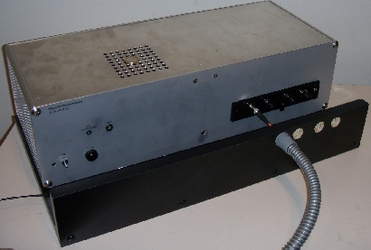
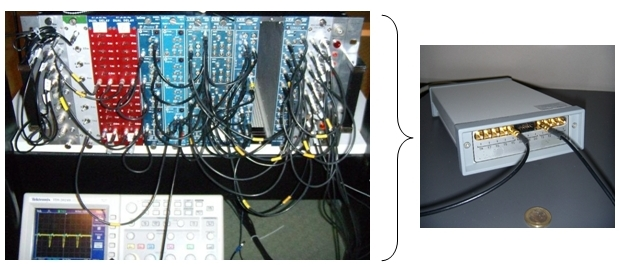
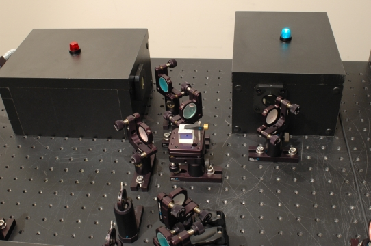

Aufbau eines quantenoptischen Experimentes
Kapitel 3: Detektoren und Datenauswertung
Auf dem optischen Tisch werden die erzeugten Photonen in Glasfaserkabel eingekoppelt und zum Detektor geleitet. Der Detektor steht dabei unter dem optischen Tisch. Die elektrischen Signale müssen für ein Ausbildungsexperiment in Echtzeit (2-5ns) ausgewertet mit speziellen Methoden der Datenauswertung bearbeitet werden. Auf dieser Seite werden die Detektoren und die Methoden der Datenauswertung vorgestellt.
Detektoren für einzelne Photonen:
Der beste Detektor zum Nachweis von Licht ist unser menschliches Auge. Wir können sofort sagen, ob Licht in unser Auge fällt, wie intensiv es ist und welche Farbe es hat. Die Stäbchen in unserem Auge sind sogar in der Lage einzelne Photonen zu registrieren [Bay79]. Durch unser neuronales System wird jedoch erst ein Signal von den Stäbchen aus an das Gehirn weitergegeben, wenn mindestens ca. 9 Photonen pro 100ms vorhanden sind. Ein weiterer Verlust kommt dadurch zustande, dass nur 10% aller im Auge eintreffenden Photonen die Netzhaut erreichen [Hec42]. Pauschal kann man sagen, dass unser Auge eine Photonenrate von 900 Photonen pro Sekunde benötigt, um einen Spannungspuls an das Gehirn zu senden. Zum Nachweis von einzelnen Photonen ist das Gesamtsystem "Auge" somit nicht geeignet.
Im Labor werden zum Nachweis von einzelnen Photonen Avalanche-Photodioden verwendet. Es sind binäre Detektoren (1 oder 0), die nur feststellen können, ob etwas ankam "1" oder nicht "0" - zu mehr können diese Detektoren nicht genutzt werden. Es ist keine Aussage möglich, welche Wellenlänge die Photonen hatten oder wie viele Photonen registriert wurden. Problematisch ist auch, dass die Detektoren ca. 1000 mal pro Sekunde ein Ereignis registrieren, trotz absoluter Dunkelheit (Dunkelrauschen). Die Effizienz der Detektoren ist bei einer Wellenlänge von 810 nm ca. 50%. Von 100 eintreffenden Photonen werden somit nur 50 Photonen durch die Detektoren registriert. Nach einer Detektion sind die Detektoren ca. 50ns "blind". Mit verschiedenen Tricks kann man diese Unzulänglichkeiten der Detektoren umgehen. Mit einem gepulsten Laser können z. B. Zeitfenster definiert werden, in denen Ereignisse überhaupt möglich sind. Die gemessenen Zählraten lassen sich in die tatsächlichen Photonenraten umrechnen. In unserem Quantenoptik-Labor werden vier Einzelphotonendetektoren verwendet, die über Glasfaserkabeln mit dem Experiment verbunden sind (Abb. 1). Jeder Detektor kann max. 1 Million Ereignisse pro Sekunde registrieren und ist dreifach gegen Überlastung bei zu hohen Ereignisraten geschützt.

Abb. 1: Vier Einzelphotonendetektoren mit einem Glasfaserkabel
Datenerfassung:
Die elektrischen Daten des Detektors müssen in Echtzeit gefiltert und analysiert werden. Hat ein Detektor ein Ereignis registriert, obwohl kein Laserpuls vorhanden war, so wird das Ereignis im Datenstrom herausgefiltert und gelöscht. Wenn ein echtes Detektorenereignis diesen Filter durchlaufen hat, so muss geschaut werden, ob gleichzeitig zwei Detekorereignisse aufgetreten sind. Zwei Detektorsignale werden als gleichzeitig akzeptiert, wenn sie mit weniger als 4ns Verzögerung auftreten. Ein solches gleichzeitiges Ereignis nennt man Koinzidenz. Die Filterung der Daten und die Analyse der Koinzidenz sollte für ein Ausbildungslabor in Echtzeit erfolgen.
Die gebräuchlichen Bausteine zur Echtzeitdatenauswertung aus der Teilchenphysik (Abb. 2 links) haben wir durch einen programmierbaren Zeit-Digital-Wandler ersetzt (Abb. 2 rechts). Mit dieser Datenerfassung kann eine Koinzidenz zweier Ereignisse mit bis zu 0,08ns Verzögerung unterschieden werden. Die verschiedenen Signale der Detektoren werden direkt über die Software und nicht mehr über Kabellängen abgeglichen. Aufgrund der Rechenleistung unseres Computers darf die Datenrate für die Echtzeitdatenauswertung momentan 200kHz nicht überschreiten. Für didaktische Zwecke kommt es uns aber nicht auf eine möglichst hohe Datenraten oder eine hohe Detektoreffizienz an, sondern auf einfache und kostengünstige Versuchsaufbauten. Mit weiteren Vereinfachungen und erwarteten Preissenkungen (Detektoren, Laser) können die Realexperimente zukünftig an Universitäten und in Schulzentren eingesetzt werden, was bisher noch nicht üblich ist. Die kontinuierliche Datenrate kann direkt am Computerbildschirm in Ereignisse pro Sekunde abgelesen werden.

Abb. 2 links: Datenerfassung mit Logikbausteinen aus der Teilchenphysik
Abb. 2 rechts: Neue Datenerfassung über Zeit-Digital-Wandler und Software
Mit dem Zeit-Digital Wandler können aus dem Datenstrom Einzeldaten herausgegriffen werden, und über Lampen auf den schwarzen Boxen (Abb. 3) angezeigt werden. Genauso ist es möglich nur einzelne Laserpulse zu starten, bis eine einzelne Detektion erfolgt, die wiederum über die Lampen angezeigt wird. Diese Methode der Datenauswertung wird als "Auswertung mit Einzelereignissen" bezeichnet.

Abb. 3: Anzeige von Einzeldaten mit LED´s auf den Boxen zur Einkopplung
Zurück zur Übersicht [klick]
Autor: P. Bronner, A. Strunz, April 2008